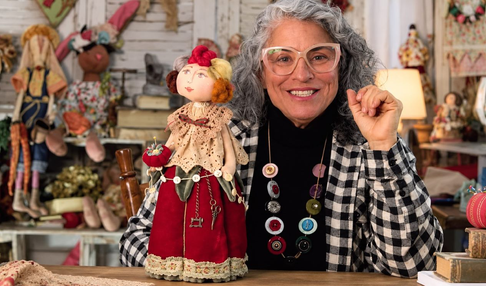
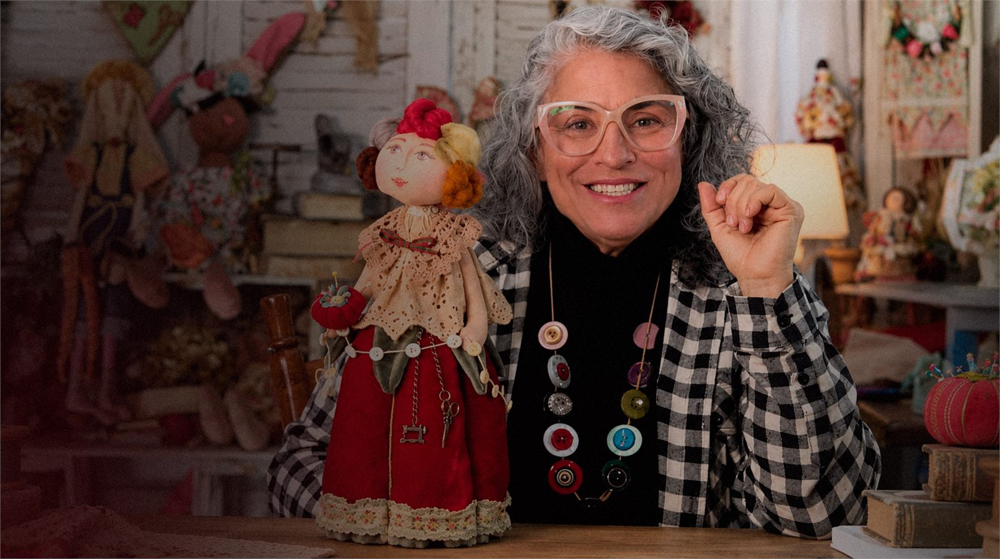
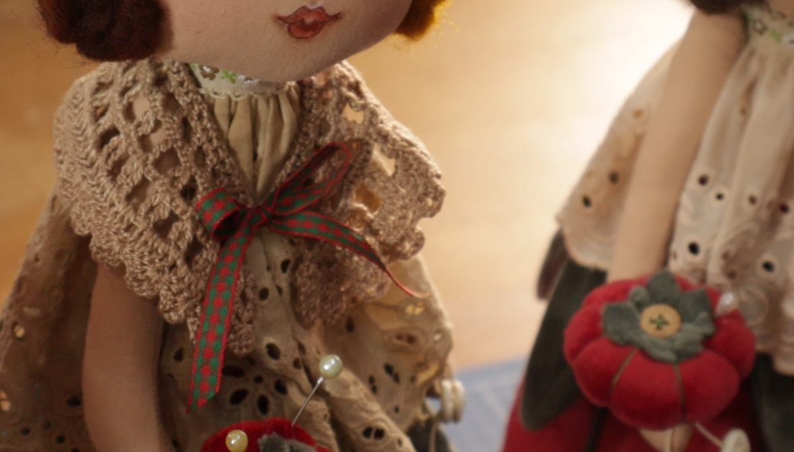
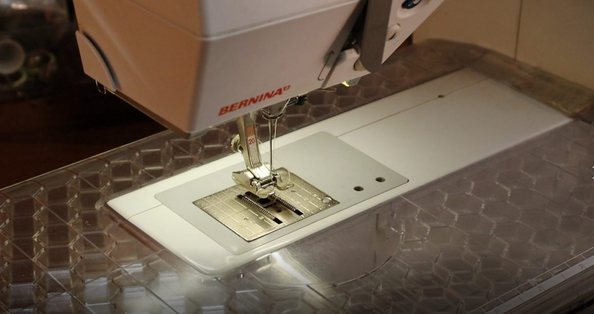
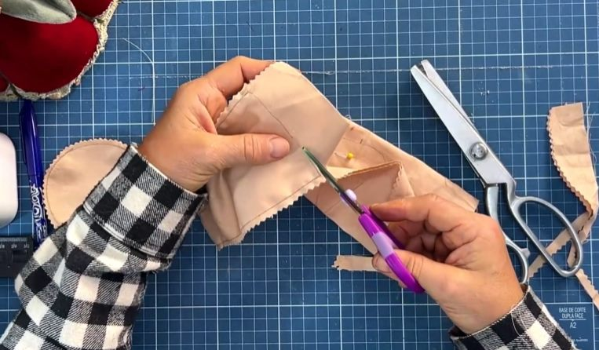
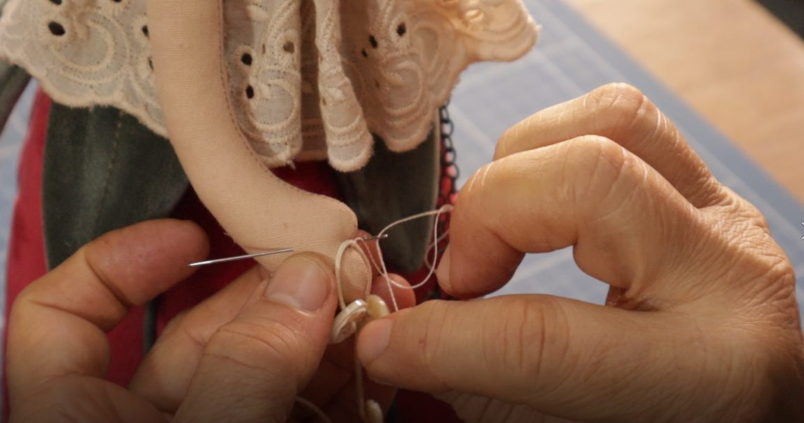
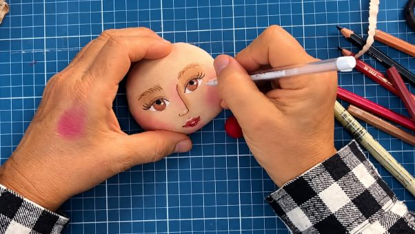
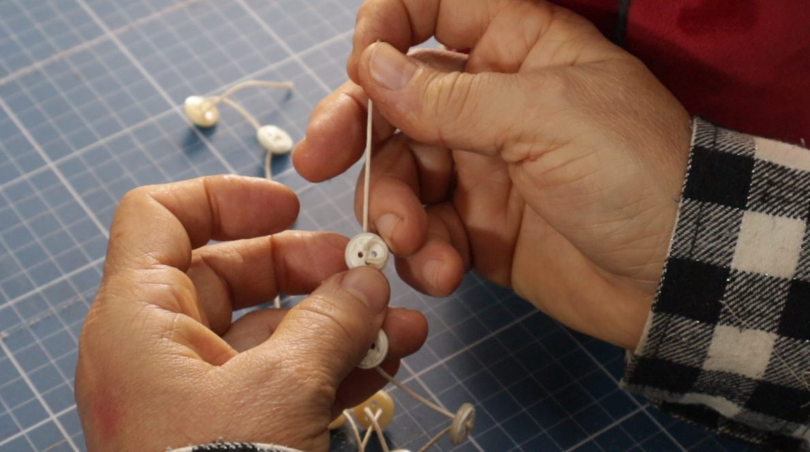

Aula 01
Molde da Velvet
O ponto de partida para compreender a estrutura da Boneca Velvet.

Tissu Studio apresenta
Um projeto autoral
de costura criativa.
Lançamento: 20% off com o cupom
Um projeto autoral do Tissu Studio
A Boneca Velvet nasce do encontro entre técnica, matéria e imaginação.
Um projeto autoral do Tissu Studio que reúne tecido, veludo, renda, fios, botões, pintura e pequenos detalhes em uma única construção.
Programa
8 aulas · mais de 2 horas de conteúdo · gravadas em alta resolução, com duas perspectivas.

Aula 01
O ponto de partida para compreender a estrutura da Boneca Velvet.

Aula 02
Conheça os materiais utilizados na construção e prepare tudo para iniciar o projeto.

Aula 03
A construção começa a ganhar forma por meio das costuras e da montagem da estrutura.

Aula 04
O planejamento se transforma em matéria e os tecidos começam a assumir as formas do projeto.

Aula 05
Construção do volume e da estrutura da Boneca Velvet.

Aula 06
O momento em que a personagem ganha expressão.

Aula 07
Construção dos cabelos e dos elementos que definem a personalidade da boneca.

Aula 08
Os últimos elementos que completam e dão unidade à Boneca Velvet.
Nos bastidores das aulas
Fotografias reais das gravações. Cada etapa da Boneca Velvet acompanhada de perto, do tecido ao último botão.
Duas perspectivas
A Boneca Velvet foi gravada em alta resolução e com duas perspectivas para aproximar você do processo de criação.
Acompanhe a condução da professora e a construção da peça.
Observe de perto as mãos, os materiais e cada etapa do trabalho.
Para quem é
A Boneca Velvet foi criada para quem encontra no artesanato uma forma de expressão e quer transformar técnica em repertório.
Uma experiência guiada para acompanhar a construção da peça por etapas.
Uma oportunidade de ampliar repertório e aperfeiçoar técnicas.
Um projeto que pode ser incorporado à sua própria produção artesanal.
Técnica e repertório
Você constrói a Boneca Velvet.
Você acompanha diferentes etapas de construção.
Você amplia suas referências.
Você pode levar o conhecimento para sua própria produção.
Depois de aprender a construção da Boneca Velvet, você pode levar esse conhecimento para a sua própria produção.
Crie para você, para presentear, para encomendas ou para comercializar suas peças.
Pronta para começar a sua Velvet?
Volte às aulas sempre que quiser, reveja uma etapa e acompanhe novamente o processo enquanto desenvolve sua peça.
Do tecido à personagem.

Quem é a professora
Valeska Fraga
Desde menina, Valeska Fraga vive, respira e sonha com artesanato.
A criatividade sempre esteve presente em sua trajetória, acompanhada pela vontade de transformar materiais simples em objetos carregados de significado, personalidade e beleza.
Autodidata por necessidade, buscou conhecimento e técnicas avançadas, encontrando nos Estados Unidos um importante espaço de aprendizado e aprofundamento.
Foi nesse caminho que seu olhar encontrou uma linguagem com a qual se identificou profundamente: o Country Primitivo.
Essa estética passou a influenciar suas criações e permanece presente em seu trabalho, especialmente nas bonecas de pano, que se tornaram uma de suas grandes paixões.
Hoje, Valeska compartilha esse repertório por meio do Tissu Studio, criando projetos que unem técnica, matéria, memória e identidade.
By Valeska Fraga
Do tecido à personagem. Da técnica à criação. Do projeto à sua própria linguagem.
Um projeto de assinatura Tissu Studio.
Country Primitivo
O Country Primitivo é uma das referências que atravessam o trabalho de Valeska.
A linguagem valoriza o feito à mão, os materiais, as texturas, os objetos com aparência de memória e a personalidade das peças.
No Tissu Studio, essa referência ganha uma interpretação própria.
Não se trata de reproduzir uma estética de maneira literal. Trata-se de utilizar esse repertório como ponto de partida para criar.
Do primeiro molde aos últimos detalhes, acompanhe a construção de uma peça autoral do Tissu Studio.
Oferta de lançamento
De R$ 197
por 12x de R$ 16,30
Lançamento: 20% off aplicando o cupom no pagamento
Uma Boneca Velvet não é definida apenas pelo formato.
O que você vai aprender
A estrutura que orienta toda a construção.
Tudo preparado antes do primeiro ponto.
A peça começa a ganhar forma.
O planejamento se transforma em matéria.
Volume e estrutura para o corpo.
O rosto ganha expressão.
Os fios que definem a personalidade.
Os elementos que completam a peça.
Material de apoio
Você não acompanha apenas as aulas.
O projeto inclui acesso ao molde completo da Boneca Velvet, preparado para acompanhar a construção apresentada no curso.
Assim, você pode assistir às aulas, consultar o molde e retornar ao material sempre que precisar durante a execução.
Um projeto completo para aprender, construir e levar para a sua própria produção.
Aprender agoraSobre o Tissu Studio
O Tissu Studio reúne o universo criativo desenvolvido por Valeska Fraga em torno da costura criativa e das possibilidades do feito à mão.
A marca nasce do encontro entre técnica, repertório, materiais e paixão pelo artesanato.
Seus projetos exploram tecidos, fios, rendas, botões, flores, estampas e elementos que fazem parte do universo da criação artesanal.
Mais do que ensinar uma peça, o Studio compartilha processos e amplia possibilidades.
Cada projeto carrega uma linguagem própria.
Depoimentos
Palavras de alunas e de quem acompanha o Tissu Studio nos cursos, nas aulas presenciais e no YouTube.
Dúvidas
Sim. O acesso ao curso é vitalício.
Sim. O acesso permite retornar ao conteúdo e rever as etapas do projeto.
Sim. As aulas foram gravadas com duas perspectivas: frontal e visão superior.
O curso pode ser utilizado por artesãs que desejam produzir e comercializar suas peças físicas, respeitando os termos de uso do conteúdo e do projeto.
Não é necessário ser uma costureira experiente para acompanhar o projeto. As aulas apresentam a construção da Boneca Velvet por etapas, permitindo acompanhar o processo e desenvolver as técnicas ao longo da execução.
Sim. O molde utilizado para a construção da Boneca Velvet faz parte dos materiais de apoio do projeto e pode ser utilizado para acompanhar as etapas apresentadas nas aulas.
O curso não possui certificado de conclusão. A proposta do Tissu Studio é oferecer uma experiência prática de criação, com foco no desenvolvimento de técnicas, repertório e construção da peça.